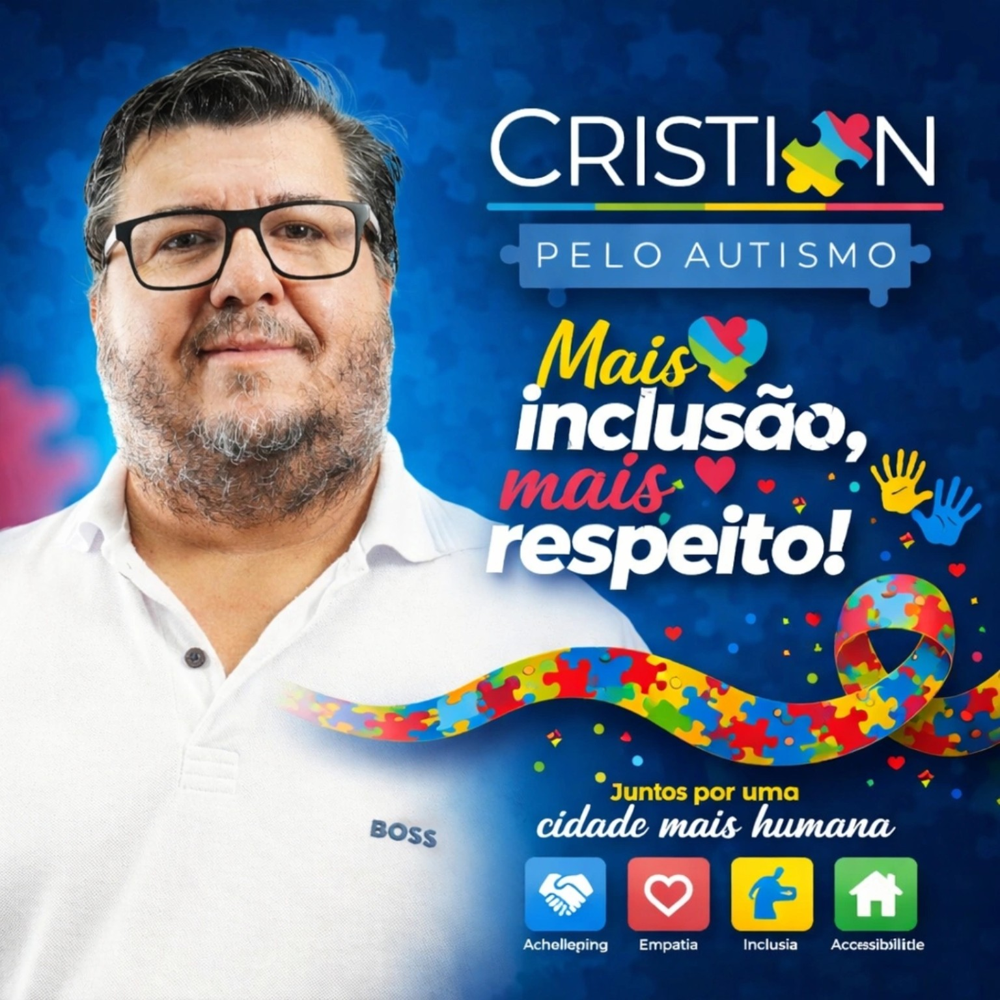

Sumaré precisa de uma Clínica Escola do Autista.
Sua manifestação fortalece a defesa de atendimento público contínuo, multiprofissional e integrado à educação para crianças autistas, especialmente aquelas com necessidades de suporte 2 e 3.

A falta de continuidade no atendimento interrompe avanços e aumenta a sobrecarga das famílias.
Uma Clínica Escola pode reunir terapias, apoio pedagógico, formação de profissionais e orientação familiar em um mesmo fluxo.
Psicologia, fonoaudiologia, terapia ocupacional, fisioterapia e apoio pedagógico articulados.
Acompanhamento frequente, plano individualizado e suporte adequado à intensidade das necessidades.
Apoio técnico para inclusão, adaptação pedagógica e diálogo permanente com as famílias.
Faça parte desta mobilização.
Preencha os dados abaixo para registrar sua manifestação. As informações de cidade e bairro ajudam a identificar onde a causa está crescendo e a organizar futuras ações públicas.
Depois de assinar, ajude a ampliar esta mobilização.
Compartilhe com familiares, educadores, profissionais de saúde, lideranças e pessoas que acreditam em atendimento digno e inclusão.